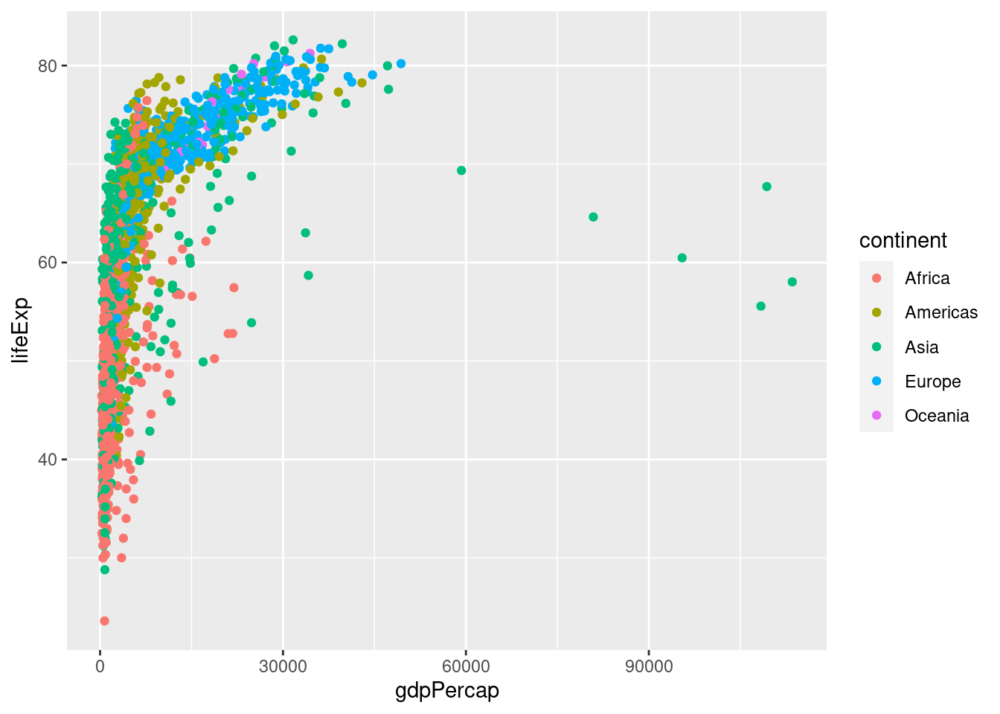
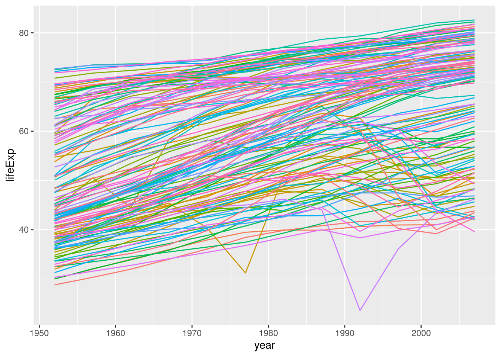
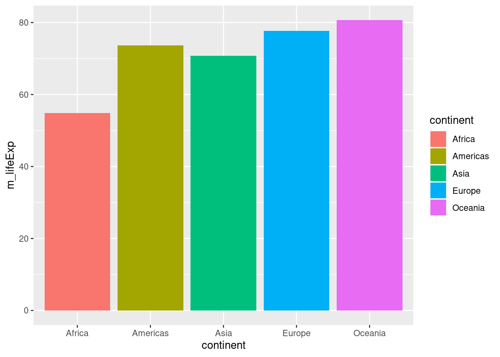
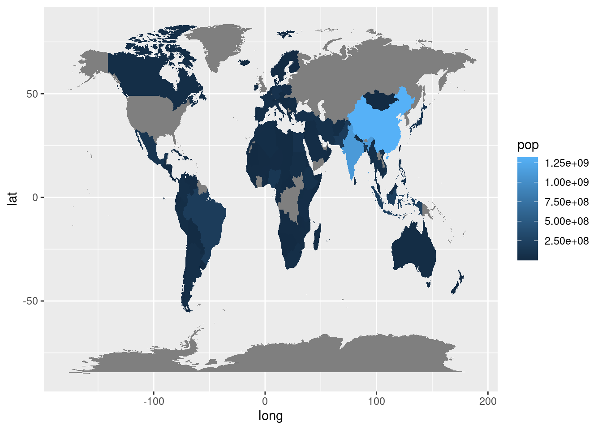

library(readr)
unicef_metadata <- read_csv("unicef_metadata.csv")Rows: 13764 Columns: 12
── Column specification ────────────────────────────────────────────────────────
Delimiter: ","
chr (4): country, alpha_2_code, alpha_3_code, iso3c
dbl (8): numeric_code, year, Population, total, GDP per capita (constant 201...
ℹ Use `spec()` to retrieve the full column specification for this data.
ℹ Specify the column types or set `show_col_types = FALSE` to quiet this message.unicef_indicator_1_graph_1_ <- read_csv("unicef_indicator_1_graph_1_.csv")Warning: One or more parsing issues, call `problems()` on your data frame for details,
e.g.:
dat <- vroom(...)
problems(dat)Rows: 15 Columns: 1
── Column specification ────────────────────────────────────────────────────────
Delimiter: ","
chr (1): country;alpha_2_code;alpha_3_code;numeric_code;indicator;time_perio...
ℹ Use `spec()` to retrieve the full column specification for this data.
ℹ Specify the column types or set `show_col_types = FALSE` to quiet this message.install.packages("gapminder")Installing package into '/cloud/lib/x86_64-pc-linux-gnu-library/4.2'
(as 'lib' is unspecified)library(gapminder)
data("gapminder")
head(gapminder)# A tibble: 6 × 6
country continent year lifeExp pop gdpPercap
<fct> <fct> <int> <dbl> <int> <dbl>
1 Afghanistan Asia 1952 28.8 8425333 779.
2 Afghanistan Asia 1957 30.3 9240934 821.
3 Afghanistan Asia 1962 32.0 10267083 853.
4 Afghanistan Asia 1967 34.0 11537966 836.
5 Afghanistan Asia 1972 36.1 13079460 740.
6 Afghanistan Asia 1977 38.4 14880372 786.install.packages("tidyverse")Installing package into '/cloud/lib/x86_64-pc-linux-gnu-library/4.2'
(as 'lib' is unspecified)library(tidyverse)── Attaching core tidyverse packages ──────────────────────── tidyverse 2.0.0 ──
✔ dplyr 1.1.2 ✔ purrr 1.0.1
✔ forcats 1.0.0 ✔ stringr 1.5.0
✔ ggplot2 3.4.2 ✔ tibble 3.2.1
✔ lubridate 1.9.2 ✔ tidyr 1.3.0
── Conflicts ────────────────────────────────────────── tidyverse_conflicts() ──
✖ dplyr::filter() masks stats::filter()
✖ dplyr::lag() masks stats::lag()
ℹ Use the conflicted package (<http://conflicted.r-lib.org/>) to force all conflicts to become errorsggplot(data = gapminder) +
aes(x = gdpPercap, y = lifeExp, color = continent) +
geom_point()
ggplot(data = gapminder) +
aes(x = year, y = lifeExp, color = country) +
geom_line() +
guides(color ="none")
select(gapminder, country, life_expectancy = lifeExp, gdp_per_capita = gdpPercap)# A tibble: 1,704 × 3
country life_expectancy gdp_per_capita
<fct> <dbl> <dbl>
1 Afghanistan 28.8 779.
2 Afghanistan 30.3 821.
3 Afghanistan 32.0 853.
4 Afghanistan 34.0 836.
5 Afghanistan 36.1 740.
6 Afghanistan 38.4 786.
7 Afghanistan 39.9 978.
8 Afghanistan 40.8 852.
9 Afghanistan 41.7 649.
10 Afghanistan 41.8 635.
# ℹ 1,694 more rowsnew_data <- select(gapminder, -pop, -year)
new_data# A tibble: 1,704 × 4
country continent lifeExp gdpPercap
<fct> <fct> <dbl> <dbl>
1 Afghanistan Asia 28.8 779.
2 Afghanistan Asia 30.3 821.
3 Afghanistan Asia 32.0 853.
4 Afghanistan Asia 34.0 836.
5 Afghanistan Asia 36.1 740.
6 Afghanistan Asia 38.4 786.
7 Afghanistan Asia 39.9 978.
8 Afghanistan Asia 40.8 852.
9 Afghanistan Asia 41.7 649.
10 Afghanistan Asia 41.8 635.
# ℹ 1,694 more rowsgapminder_avg_continent_2007 <- gapminder %>%
filter(year == 2007) %>%
group_by(continent) %>%
summarise(m_lifeExp = mean(lifeExp))
ggplot(data = gapminder_avg_continent_2007) +
aes(x = continent, y = m_lifeExp, fill = continent) +
geom_col()
pop_2007 <- gapminder %>%
filter(year == 2007)
map_world <- map_data("world")
map_pop_2007 <- full_join(map_world, pop_2007, by = c("region" = "country"))
ggplot(data = map_pop_2007) +
aes(x = long, y = lat, group = group, fill = pop) +
geom_polygon()